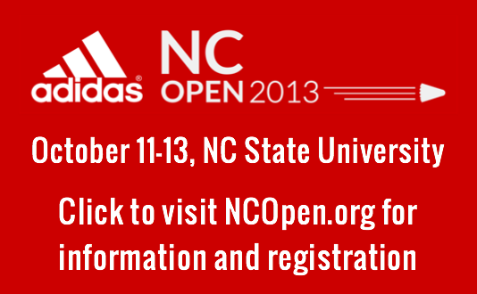

Mark your calendars for the upcoming two-star ranking NC Open tournament to be held at NC State University from October 11-13

Lake Lynn Tues/Fri: 6 - 9 PM Sun: 1 - 6 PM
Netsports Tues-Fri: 6 - 8 AM
Sport2Sport Sat: 7 - 10 PM Tues: 5 - 9 PM Sun: 9 AM - 2 PM
Optimist Park Thurs: 10:30 AM - 12:30 PM
Bond Park Call for schedule (919) 462-3970
UNC Chapel Hill Check club calendar
Duke Call for schedule (919) 613-7489
Duke CL Call for schedule (919) 660-6610
NC State Mon/Wed/Fri 6 PM onwards